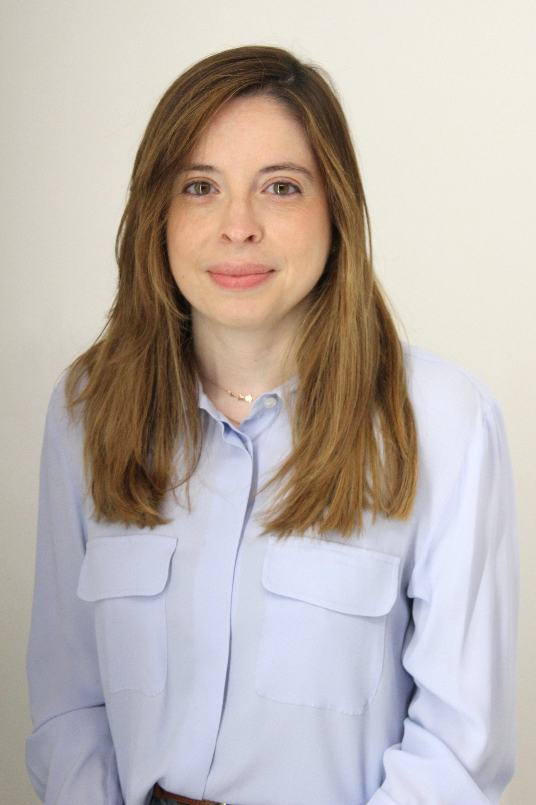
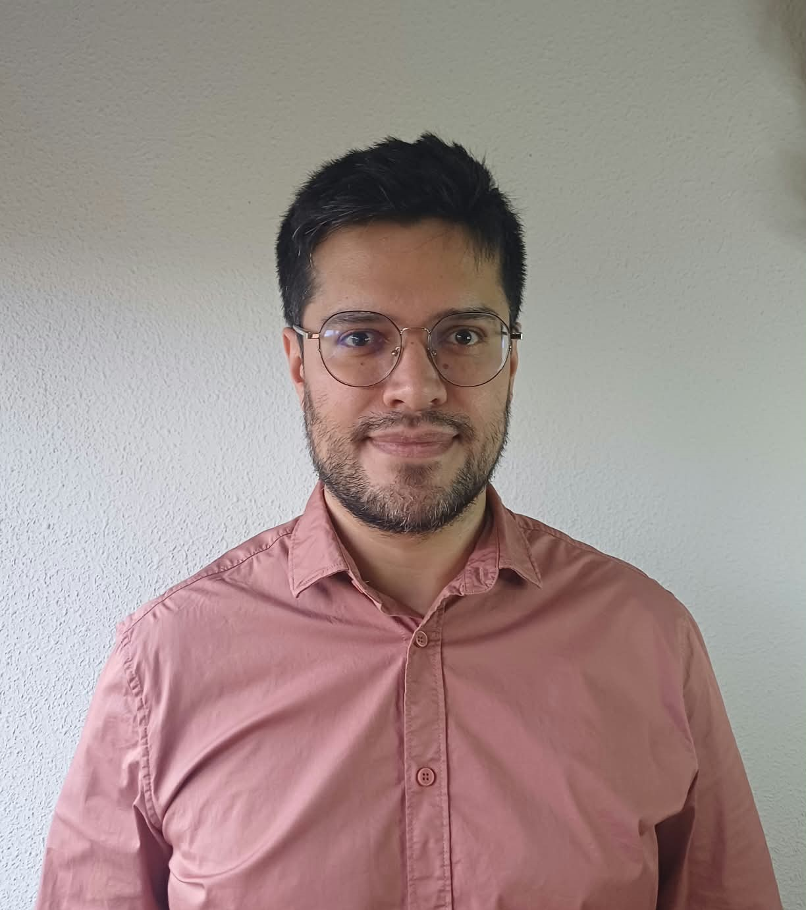
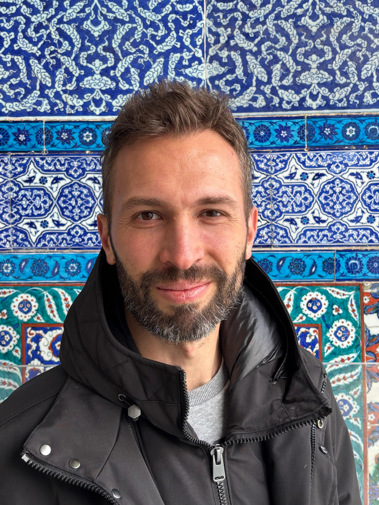
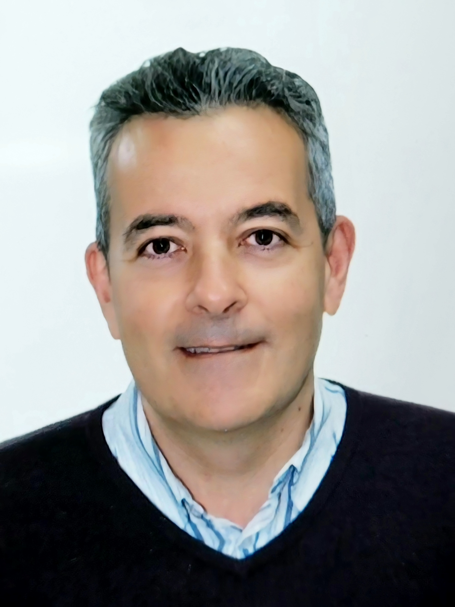
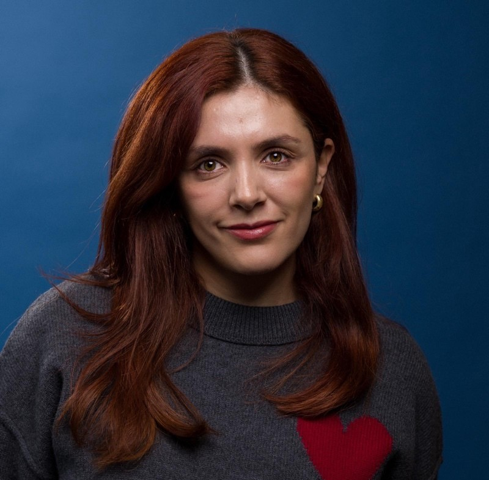
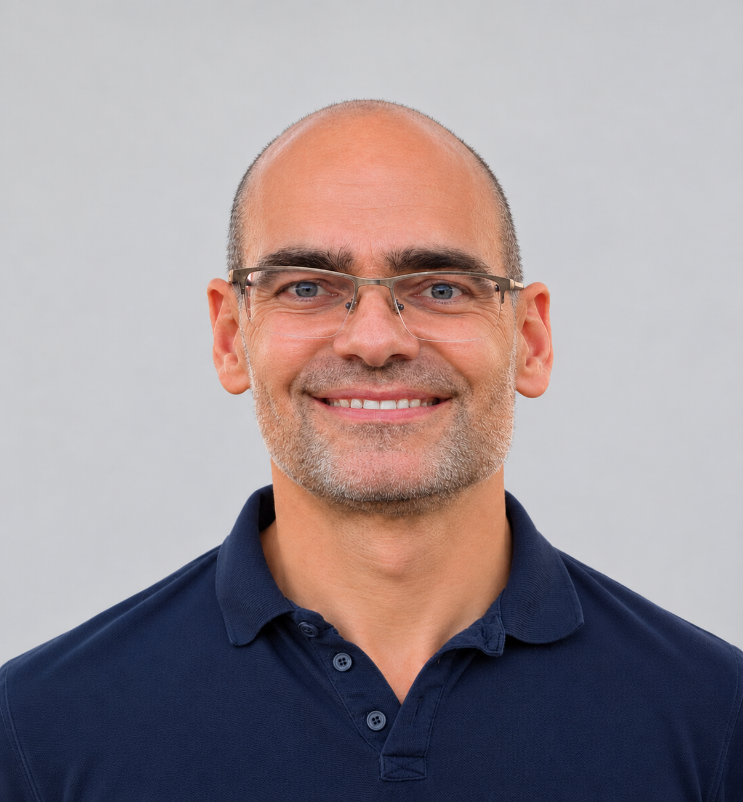
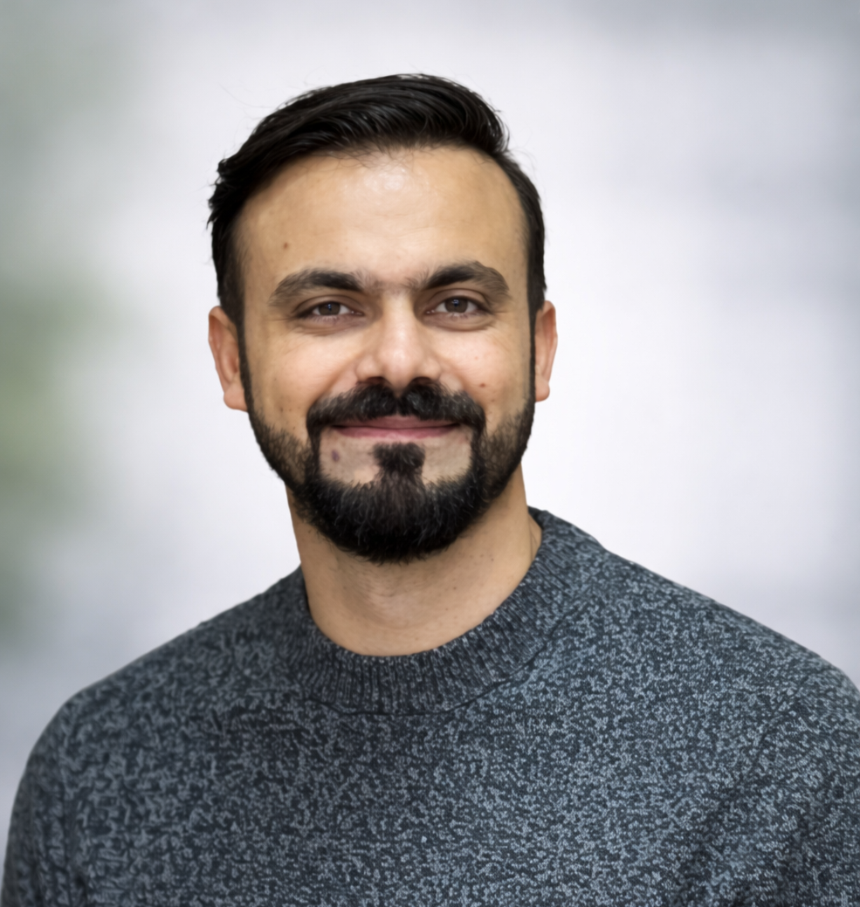
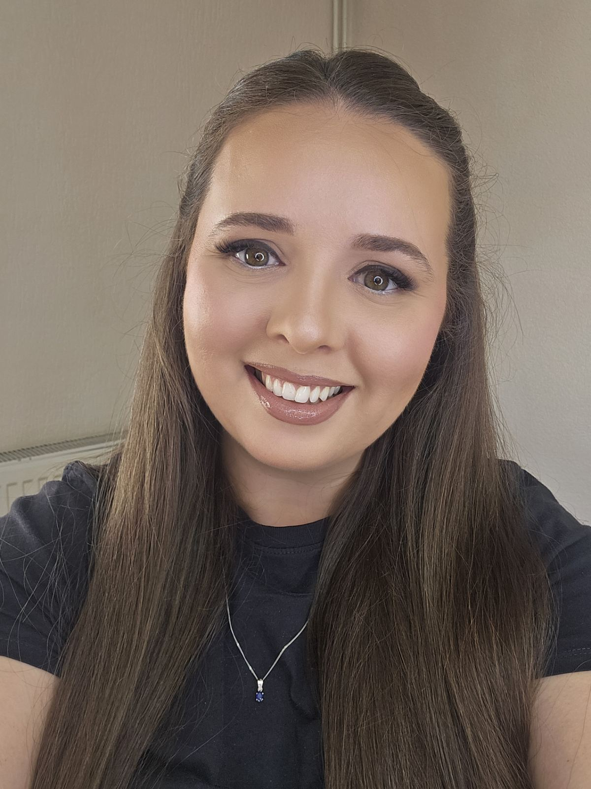

Friends & Collaborators
Research is also about people. Over the years, we have had the pleasure of working with researchers and colleagues who have contributed to our work and helped shape our group. Here are some of the people who have been part of our journey.

Sergio R. López Chacón
LinkedIn profile
Jorge Rodríguez Chueca
LinkedIn profile
Rafael Morán
LinkedIn profile
Nathalia Silva-Cancino
LinkedIn profile
Juan Mata
LinkedIn profileCristian Ponce Farfán
LinkedIn profileRocío L. Segura
LinkedIn profile
Zulkeefar Dar
LinkedIn profile
Frosina Panovska
LinkedIn profileStevcho Mitkovski
LinkedIn profilePhoto not available